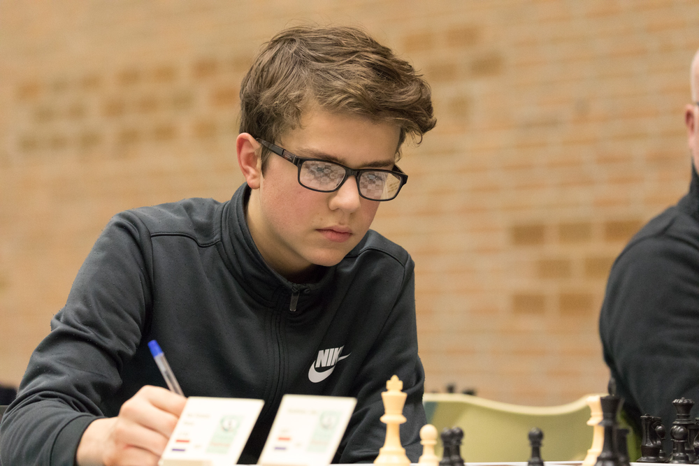

Pieter van Foreest
Family Van Foreest
Games
Blog
Contact

Picture made by Harry Gielen
My name is Pieter van Foreest. I was born in Zutphen on 23 October 2002.
I have 4 brothers
Jorden
,
Lucas
,
Tristan
,
Nanne
and one sister
Machteld
.